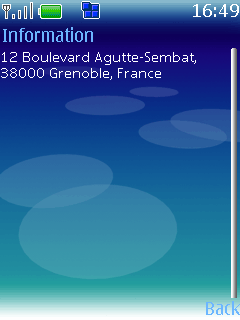
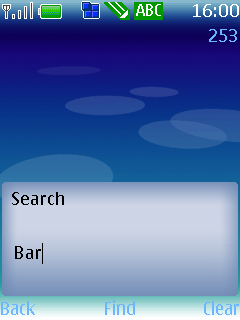
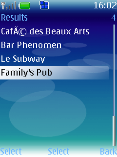
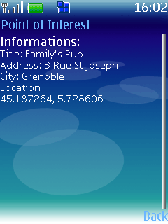
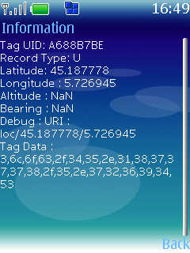

Touch'n Locate demonstration
Short description
This demonstration presents the usage of NFC phones and RFID tags to present locations and associated points of interest to the user.
This demonstration is based on the
Team TouchKey code.
1.1. User documentation
After touching a tag, the user can :
- View the location on Google Map

- Reverse geocode the GPS coordinates to transform in a readable address

- Search for points of interest near the embedded location
By entering key words...

… then selecting a result ...

… and finally by reading the point of interest details :


Technical documentation
Locations can be stored in two different ways :
- in a Locate record type : urn:nfc:wkt:L
- fields are stored in their binary representation
- fields order : latitude, longitude, altitude, bearing
- This record type is smallest possible one
- in a URI record type : urn:nfc:wkt:U
Altitude and bearing fields are optional.
Dependencies
Tips for future improvements
- Cache maps in memory, to bring them back faster
- Improve the points of interest search area
 PDF
PDF History
History


{kind=link}
{kind=link}
{kind=link}
{kind=link}
{kind=link}